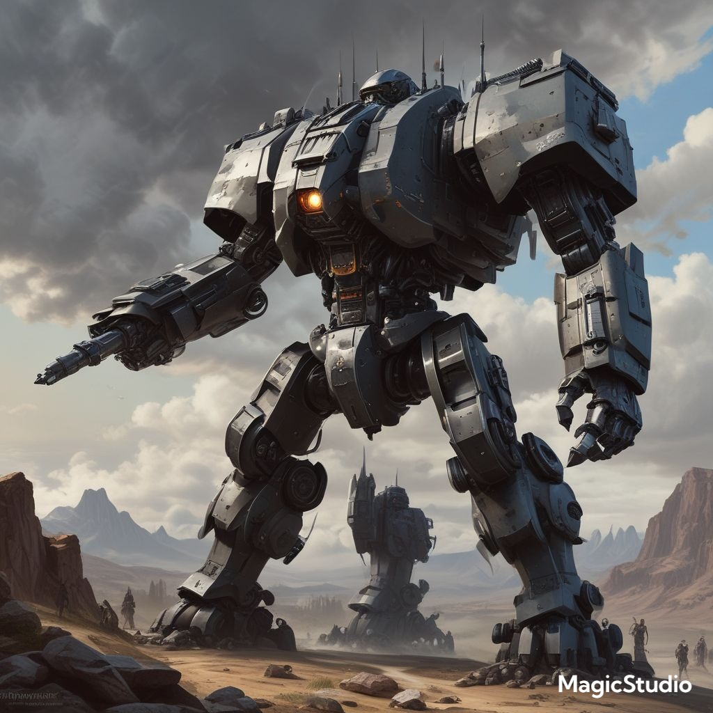

No ano de 2100, a humanidade rompeu as barreiras do espaço-tempo com a invenção da dobra espacial, iniciando uma era de expansão galáctica. Séculos depois, em 2700, centenas de sistemas estelares foram colonizados, formando uma rede de civilizações sob a União Terrestre. Contudo, a vastidão do espaço e a lentidão nas comunicações começaram a corroer essa hegemonia.
Em 2900, a criação dos primeiros mechas de batalha revolucionou a guerra interestelar, intensificando rivalidades entre as colônias. O colapso definitivo da União ocorreu após a Grande Guerra Galáctica (3150–3400), deixando um vácuo de poder que deu origem a grandes facções, cada uma com ideologias e estratégias únicas para dominar a Via Láctea.
Agora, no ano 3600, a galáxia está fragmentada. Facções como a tecnocrática Hegemonia Solaris, o militarista Império Kal’tariano e a libertária União Livre de Veyr lutam pelo controle, enquanto clãs menores e forças mercenárias, como a Ordem do Aço, moldam o destino dos sistemas colonizados. A tecnologia dos mechas continua a evoluir, alimentando conflitos e ameaçando mergulhar a humanidade em uma nova era de guerra total.
Nesse cenário, liberdade, poder e sobrevivência são as forças motrizes, enquanto alianças instáveis e ideologias opostas definem os rumos da galáxia.

Imagem feita por IA
Facções Maiores
Hegemonia Solaris
Origem: Um governo tecnocrático que surgiu do colapso das União Terrestre, controlando vastas regiões e sistemas industrializados.
Ideologia: "A ordem nasce da tecnologia." Acreditam que a tecnologia deve ser centralizada e regulamentada para manter a paz.
Força Militar: Mechas altamente padronizados e fáceis de produzir em massa, mas com capacidades tecnológicas de ponta, como IA de apoio e escudos de energia.
Ponto Fraco: Burocracia lenta para reagir a ameaças.
Aliança Estelar Drakani
Origem: Formada por corporações gigantescas que se aliaram após o êxodo da Terra, controlando rotas de comércio e recursos valiosos.
Ideologia: "O mercado une todos." A riqueza é a força motriz da civilização, e a guerra é vista como uma oportunidade econômica.
Força Militar: Mechas adaptáveis, projetados para proteção mercenária e versatilidade, mas geralmente terceirizam a guerra para exércitos contratados.
Ponto Fraco: Alta dependência de alianças e estabilidade econômica; podem ser vulneráveis a sabotagem.
Império Kal’tariano
Origem: Uma dinastia criada por uma antiga colônia militar que declarou independência. Suas tradições se baseiam no poder e na lealdade.
Ideologia: "O direito de governar pertence aos fortes." A guerra é um modo de vida, e o controle territorial é visto como sagrado.
Força Militar: Mechas pesados e duráveis, projetados para batalha prolongada. Armas brutais e designs ornamentados.
Ponto Fraco: Conservadorismo; resistem à inovação e dependem de estratégias tradicionais.
União Livre de Veyr
Origem:Uma aliança de sistemas que se rebelaram contra grandes potências para formar uma confederação livre e democrática.
Ideologia: "Liberdade acima de tudo." Valorizam autonomia local e direitos individuais, mesmo que isso crie divisões internas.
Força Militar: Mechas leves e ágeis, projetados para guerrilha e ataques rápidos. Sua força está na flexibilidade estratégica.
Ponto Fraco: Faltam recursos para manter um exército constante, e facções internas frequentemente entram em conflito.
Ordem do Legado Perdido
Origem: Uma seita religiosa surgida após o colapso da Terra, que vê as máquinas e a tecnologia como artefatos sagrados.
Ideologia: "O aço é divino." Acreditam que o uso correto da tecnologia é uma forma de alcançar a transcendência espiritual.
Força Militar: Mechas exóticos, baseados em tecnologias antigas e rituais. Menor número, mas extremamente poderosos e autônomos.
Ponto Fraco: Recrutamento lento; seus recursos e tecnologias são limitados a suas crenças religiosas.
Coletivo Marrok
Origem: Um grupo separatista transhumanista que usa cibernética avançada para superar os limites humanos. Seus membros são tanto humanos quanto híbridos mecânicos.
Ideologia: "A evolução é a fusão entre homem e máquina." Desprezam as facções que mantêm a humanidade "primitiva".
Força Militar: Mechas semi-biológicos com interfaces neurais diretas; pilotados por "mentes coletivas" que podem coordenar ataques de maneira perfeita.
Ponto Fraco: Isolacionistas; não possuem aliados fortes e muitas vezes são vistos como ameaças existenciais.
Facções Menores
Ordem do Aço
Origem: Fundada após a fragmentação de um antigo império industrial e militar, a Ordem do Aço surgiu das cinzas de uma guerra devastadora. Seus fundadores, veteranos e engenheiros militares, juraram reconstruir a glória perdida, acreditando que apenas o aço — como símbolo de força, disciplina e progresso — poderia moldar um novo futuro. Hoje, a Ordem é uma força mercenária temida, mas com ambições ocultas de unificar as terras sob sua bandeira.
Ideologia: "Ehre durch Stahl, Sieg durch Ordnung! (Honra através do aço, vitória através da Ordem!)" A Ordem do Aço acredita que o caos só pode ser controlado pela força e pela disciplina absoluta. Seus membros consideram o aço, tanto literal quanto figurativamente, o elemento que separa os fracos dos fortes. Apesar de oferecerem seus serviços como mercenários, eles seguem uma filosofia expansionista, na qual todos devem ser moldados pelo aço — seja pela aliança, seja pela guerra.
Força Militar: Mechas robustos e customizados.
Horda Khagatai
Origem: Descendentes de nômades espaciais que se recusaram a se integrar aos impérios galácticos.
Ideologia: "A liberdade está nas estrelas." Vivem em frotas móveis e sobrevivem através de comércio, mineração e pirataria.
Força Militar: Mechas improvisados, ideais para emboscadas e batalhas em gravidade zero.
Aliança Científica Helios
Origem: Um grupo de cientistas e engenheiros que abandonaram a política para focar no desenvolvimento de tecnologia pura
Ideologia: "A ciência é o verdadeiro poder." Evitam conflitos diretos, mas vendem armas e tecnologia para sustentar sua pesquisa.
Força Militar: Protótipos avançados, mas em números reduzidos.